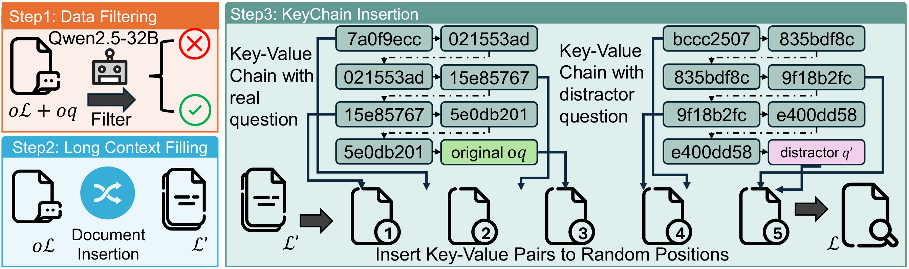
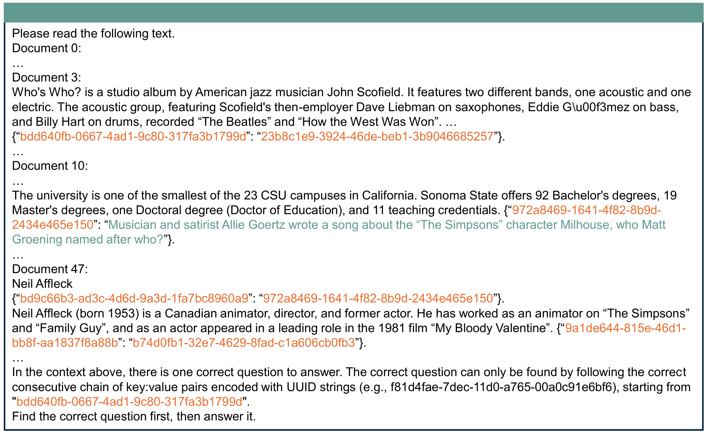
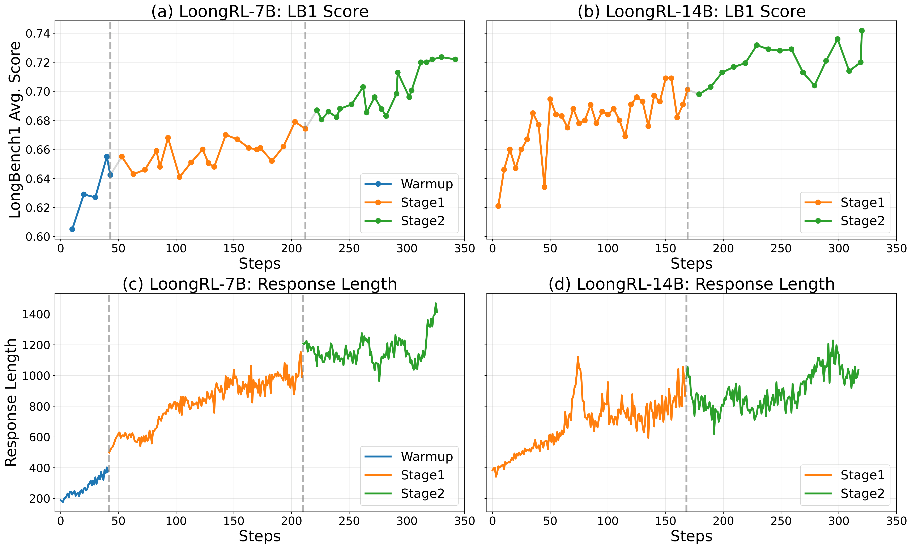
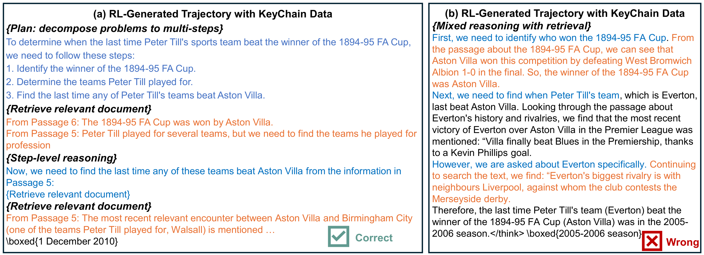

LoongRL: Reinforcement Learning for Advanced Reasoning over Long Contexts
Abstract
Reasoning over long contexts is essential for large language models. While reinforcement learning (RL) enhances short-context reasoning by inducing "Aha" moments in chain-of-thought, the advanced thinking patterns required for long-context reasoning remain largely unexplored, and high-difficulty RL data are scarce.
In this paper, we introduce LoongRL, a data-driven RL method for advanced long-context reasoning. Central to LoongRL is KeyChain, a synthesis approach that transforms short multi-hop QA into high-difficulty long-context tasks by inserting UUID chains that hide the true question among large collections of distracting documents. Solving these tasks requires the model to trace the correct chain step-by-step, identify the true question, retrieve relevant facts and reason over them to answer correctly.
RL training on KeyChain data induces an emergent plan–retrieve–reason–recheck reasoning pattern that generalizes far beyond training length. Models trained at 16K effectively solve 128K tasks without prohibitive full-length RL rollout costs. On Qwen2.5-7B and 14B, LoongRL substantially improves long-context multi-hop QA accuracy by +23.5% and +21.1% absolute gains. The resulting LoongRL-14B reaches a score of 74.2, rivaling much larger frontier models such as o3-mini (74.5) and DeepSeek-R1 (74.9). It also improves long-context retrieval, passes all 128K needle-in-a-haystack stress tests, and preserves short-context reasoning capabilities.
Method Overview
LoongRL constructs KeyChain training data by inserting UUID key-value chains into long-context documents, hiding the true question behind a chain of linked keys. The model must trace the correct chain, recover the original question, and then reason over the full context to answer.
Figure 1: Overview of KeyChain data construction. Short multi-hop QA is transformed into high-difficulty long-context reasoning tasks.
KeyChain Data Example
Below is the skeleton of a KeyChain-augmented long-context question. UUID chains are inserted among documents, with only one chain leading to the correct question.
Figure 2: A skeleton of KeyChain-augmented training data used in LoongRL.
<Document 0>
<original text>
{"UUIDB-n": "distracting question"}
<original text>
<Document 1>
{"UUIDA-1": "UUIDA-2"}
<Document 2>
{"UUIDB-1": "UUIDB-2"}
...
{"UUIDA-n": "correct question"}
...
In the context above, there is one correct question to answer. The correct question can only be found by following the correct consecutive chain of key:value pairs encoded with UUID strings, starting from "starting UUIDA-1".
Find the correct question first, then answer it.
Main Results
LoongRL delivers frontier-level long-context reasoning at much smaller scales (7B/14B), rivaling o3-mini and DeepSeek-R1, while preserving general short-context abilities.
Table 1: Long-Context Reasoning & General Short-Context Abilities
| Model | Long-Context Reasoning | General & Short Reasoning | ||||||||
|---|---|---|---|---|---|---|---|---|---|---|
| Avg. | HotpotQA | 2WikiMQA | MuSiQue | NarrativeQA | QASPER | Avg. | MMLU | MATH | IFEval | |
| o3-mini (medium) | 74.5 | 83.0 | 89.0 | 64.0 | 60.7 | 60.5 | 92.1 | 86.9 | 98.0 | 91.5 |
| DeepSeek-R1 | 74.9 | 82.7 | 91.3 | 72.2 | 66.9 | 61.4 | 90.5 | 90.8 | 97.3 | 83.3 |
| GPT-4o | 64.7 | 82.5 | 78.0 | 54.0 | 60.5 | 48.5 | 82.5 | 88.7 | 74.6 | 84.3 |
| QwQ-32B | 69.6 | 78.5 | 87.4 | 62.7 | 61.1 | 58.5 | 85.9 | 75.7 | 98.0 | 83.9 |
| R1-Distill-LLaMA-70B | 65.4 | 76.1 | 85.0 | 61.9 | 53.4 | 50.5 | 85.4 | 82.4 | 94.5 | 79.3 |
| 7B Scale | ||||||||||
| Qwen2.5-7B-Instruct | 48.9 | 69.5 | 50.5 | 34.0 | 44.5 | 46.0 | 73.5 | 73.4 | 76.0 | 71.2 |
| R1-Distill-Qwen-7B | 31.2 | 40.2 | 53.3 | 11.1 | 8.9 | 42.5 | 69.9 | 62.3 | 92.8 | 54.7 |
| LoongRL-7B | 72.4 | 83.1 | 91.1 | 65.6 | 58.4 | 63.6 | 75.0 | 76.2 | 78.0 | 70.9 |
| 14B+ Scale | ||||||||||
| Qwen2.5-14B-Instruct | 53.1 | 74.0 | 60.5 | 36.5 | 48.5 | 46.0 | 81.3 | 79.4 | 83.4 | 81.0 |
| R1-Distill-Qwen-14B | 64.9 | 77.5 | 87.0 | 58.0 | 51.0 | 51.0 | 81.0 | 76.6 | 93.9 | 72.6 |
| R1-Distill-Qwen-32B | 65.5 | 76.3 | 87.6 | 59.8 | 52.7 | 50.9 | 82.4 | 80.5 | 94.3 | 72.5 |
| QwenLong-L1-32B | 70.1 | 80.7 | 89.1 | 65.2 | 58.6 | 56.7 | 84.1 | 78.5 | 95.2 | 78.6 |
| LoongRL-14B | 74.2 | 82.2 | 93.3 | 67.5 | 63.4 | 64.5 | 80.7 | 80.5 | 83.2 | 78.4 |
Length Generalization
While trained only on 16K contexts, LoongRL generalizes impressively to contexts up to 128K tokens.
Table 2: Generalization from 16K Training to 128K Evaluation
| Model | NarrativeQA | RULER | |||||
|---|---|---|---|---|---|---|---|
| 0-16K | 16K-32K | 32K-64K | 16K | 32K | 64K | 128K | |
| Qwen2.5-7B-Instruct | 55.7 | 35.2 | 42.4 | 92.3 | 89.5 | 81.8 | 69.4 |
| R1-Distill-Qwen-7B | 55.7 | 35.2 | 42.4 | 18.9 | 4.4 | 1.4 | 0.9 |
| LoongRL-7B | 69.8 | 47.4 | 57.2 | 93.4 | 91.4 | 86.2 | 76.8 |
| Qwen2.5-14B-Instruct | 55.7 | 40.7 | 48.3 | 93.4 | 92.5 | 82.3 | 73.6 |
| R1-Distill-Qwen-14B | 63.0 | 35.9 | 54.6 | 85.7 | 82.0 | 60.2 | 28.2 |
| R1-Distill-Qwen-32B | 57.4 | 44.4 | 58.9 | 90.3 | 88.9 | 71.5 | 40.9 |
| QwenLong-L1-32B | 65.9 | 48.1 | 60.0 | 87.6 | 86.8 | 80.6 | 70.2 |
| LoongRL-14B | 69.5 | 55.2 | 64.3 | 95.4 | 95.1 | 87.1 | 79.9 |
Ablation Studies
KeyChain Data Effectiveness
| Model | HotpotQA | 2WikiMQA | MuSiQue | NarQA | QASPER | Avg. |
|---|---|---|---|---|---|---|
| Qwen2.5-7B-Instruct | 69.5 | 50.5 | 34.0 | 44.5 | 46.0 | 48.9 |
| LoongRL-7B (no KeyChain) | 80.3 | 84.7 | 58.5 | 53.0 | 54.5 | 66.2 |
| LoongRL-7B | 83.1 | 91.1 | 65.6 | 58.4 | 63.6 | 72.4 |
Answer Verifier Comparison
| Reward Verifier | HotpotQA | 2WikiMQA | MuSiQue | NarQA | QASPER | Avg. |
|---|---|---|---|---|---|---|
| F1 score | 79.5 | 86.4 | 58.0 | 46.6 | 55.0 | 65.1 |
| LLM-as-a-judge | 80.0 | 87.6 | 60.0 | 52.3 | 54.5 | 65.2 |
| Exact match | 82.7 | 91.3 | 66.3 | 51.0 | 54.9 | 69.2 |
| Two-way Substring (ours) | 83.1 | 91.1 | 65.6 | 58.4 | 63.6 | 72.4 |
Training Dynamics
Long-context reasoning accuracy and training response lengths throughout RL training, showing consistent improvements across each stage.
Figure 3: Long-context reasoning accuracy and training response lengths throughout RL training for both 7B and 14B models.
Emergent Reasoning Pattern
RL training with KeyChain data induces a structured plan–retrieve–reason–recheck reasoning pattern. Below we contrast two models on the same question.
Figure 4: Comparison of reasoning patterns. (a) KeyChain-trained model exhibits structured plan-retrieve-reason-recheck. (b) Non-KeyChain model shows mixed reasoning-with-retrieval.
Trajectory Examples
Question: Gary L. Bennett was a part of the space missions that have a primary destination of what celestial body?
[Plan] To determine the primary destination of the space missions that Gary L. Bennett was a part of, we need to identify the space missions he worked on from the given passages and then find the primary destination of those missions.
[Retrieve] From Passage 1: "His professional career has included work on the Voyager, Galileo, and Ulysses space missions."
[Reason] Now, we need to find the primary destination of these missions. Let's check Passage 5 for information about the Ulysses mission:
[Retrieve] "Ulysses was a robotic space probe whose primary mission was to orbit the Sun and study it at all latitudes."
Therefore, the primary destination of the Ulysses space mission is the Sun.
[Recheck] Although we should check the other missions mentioned (Voyager and Galileo) for completeness... the question specifically asks about the space missions that Gary L. Bennett was a part of, and the Ulysses mission is clearly stated to have the Sun as its primary destination.
Answer: the Sun ✓
[No systematic decomposition]
First, we need to identify the space missions mentioned in the passage that Gary L. Bennett was involved with... Bennett was involved in several space missions, including the Voyager, Galileo, and Ulysses space missions.
From these statements, we can deduce that Bennett was involved in missions to Jupiter, Saturn, Uranus, Neptune, and the Sun. However, the primary destinations mentioned directly in relation to Bennett's roles are Jupiter for the Galileo and Ulysses missions...
[Premature conclusion without recheck] Given the specific mention of Bennett's role in the Galileo mission to Jupiter... Jupiter stands out as a primary destination.
Answer: Jupiter ✗
Needle-in-a-Haystack Retrieval
LoongRL achieves perfect 100% retrieval accuracy on the Needle-in-a-Haystack benchmark, while other models struggle at various context depths.
LoongRL-7B (100% accuracy)
R1-Distill-Qwen-7B
Qwen2.5-7B-Instruct
QwenLong-L1-32B
Retrieval Trajectory Example
On the RULER variable tracking task, the KeyChain-trained model performs step-by-step, human-readable retrieval.
<think> Let's break it down step by step:
1. VAR QPE = 64886 — assigns 64886 to QPE.
2. VAR SEJ = VAR QPE — assigns QPE (64886) to SEJ.
3. VAR ZQO = VAR SEJ — assigns SEJ (64886) to ZQO.
4-5. ... (chain continues)
6. VAR SGMLJ = 92018
7. VAR PBDME = VAR SGMLJ — assigns 92018 to PBDME.
8. VAR EANSM = VAR PBDME — assigns 92018 to EANSM.
9. VAR QPKBX = VAR EANSM — assigns 92018 to QPKBX.
10. VAR YYZJM = VAR EANSM — assigns 92018 to YYZJM. </think>
Answer: SGMLJ, PBDME, EANSM, QPKBX, YYZJM ✓
<think> The reasoning process involves identifying the lines where the value 92018 is first assigned to a variable, which is "VAR PBDME = 92018". Then, tracking this value through all subsequent assignments... The variables that inherit this value are EANSM, YYZJM, SGMLJ, and FAI. </think>
Answer: PBDME, EANSM, YYZJM, SGMLJ, FAI ✗ (conflates chains, includes wrong variable FAI)
BibTeX
@misc{wang2025loongrlreinforcementlearningadvanced,
title={LoongRL: Reinforcement Learning for Advanced Reasoning over Long Contexts},
author={Siyuan Wang and Gaokai Zhang and Li Lyna Zhang and Ning Shang and Fan Yang and Dongyao Chen and Mao Yang},
year={2025},
eprint={2510.19363},
archivePrefix={arXiv},
primaryClass={cs.CL},
url={https://arxiv.org/abs/2510.19363},
}